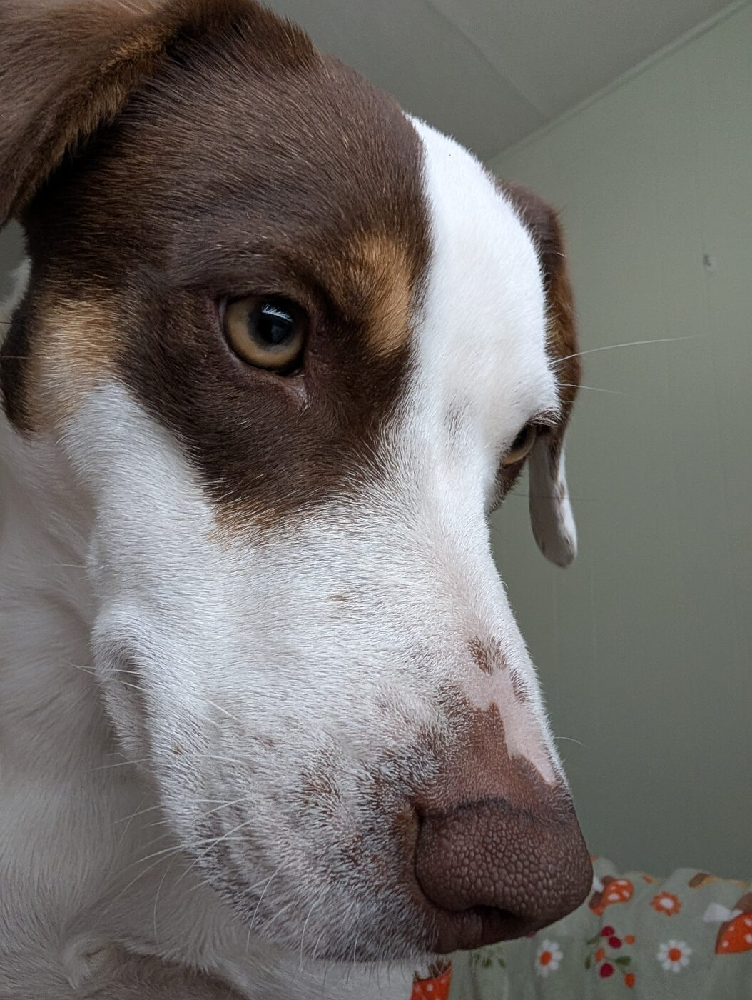

About us
Taylor
Trail-blamer, campfire-light-er, and full-time dog chauffeur. I like long walks in the woods, short swims in cold lakes, and coffee that rides in a metal cup on the lid of a camp stove.
Hazel (Hazelnut Matilda Brown)

An Australian cattle dog mix with a splash of husky. We adopted her on January 24th, 2026. She answers to Hazel, Hazelnut, Matilda, and Crazy Hazey — whichever one is closest to a treat. Shy with new people until she knows you, then deeply sweet. A champion log-jumper and a good hiker, even when her leash manners forget themselves around squirrels.
Why we're here
We started this blog to remember the trips and to give other dog-and-human duos a few useful notes before they load up the car. If one person keeps their dog out of a poison-ivy patch because of something we wrote, it was worth it.